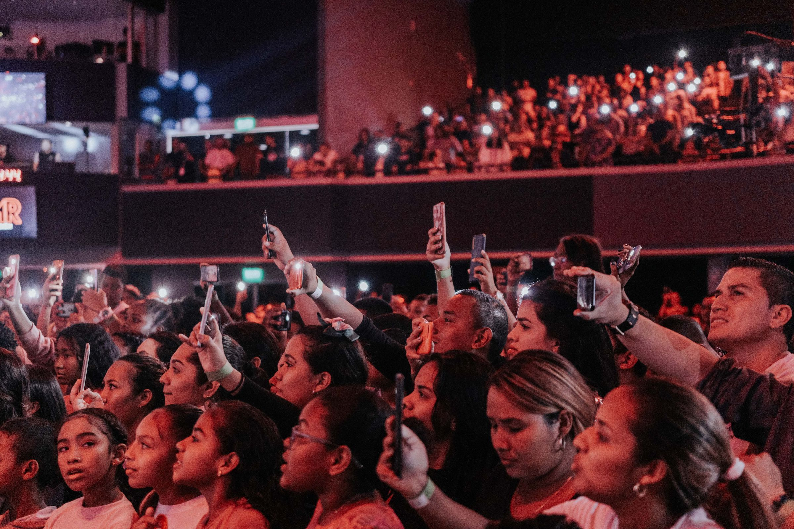

WIDE · CHORUS ·
the floor is swaying with you
LIVE
mic on · Aman's phone
your pitch against the melody · last 12 seconds · grey where it couldn't tell
G4 · in tune
Wankhede ·
Arena
2:04
of a 3:30 song · chorus 2
OK
end song
Back
stop